More Results
SierpinskiCam on diverse DAVIS sequences with varied camera trajectories, trained on Wan2.1 Fun-Control 14B.

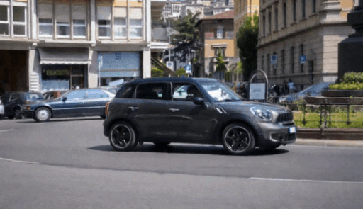
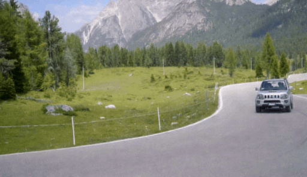
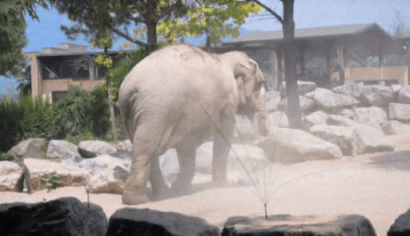
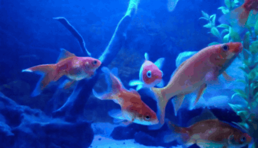
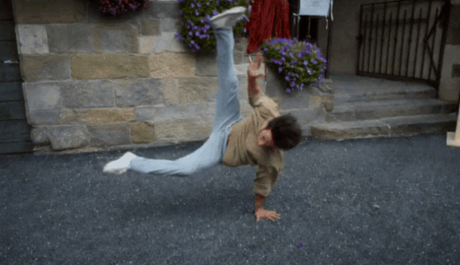
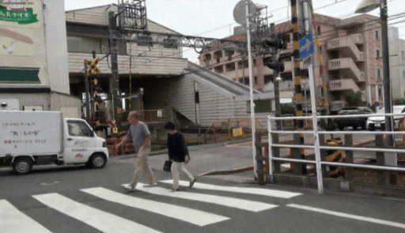

SierpinskiCam tackles two core conditioning questions in video retaking: how to inject a target camera trajectory (for precise viewpoint control) and how to inject the source video (for faithful appearance preservation).
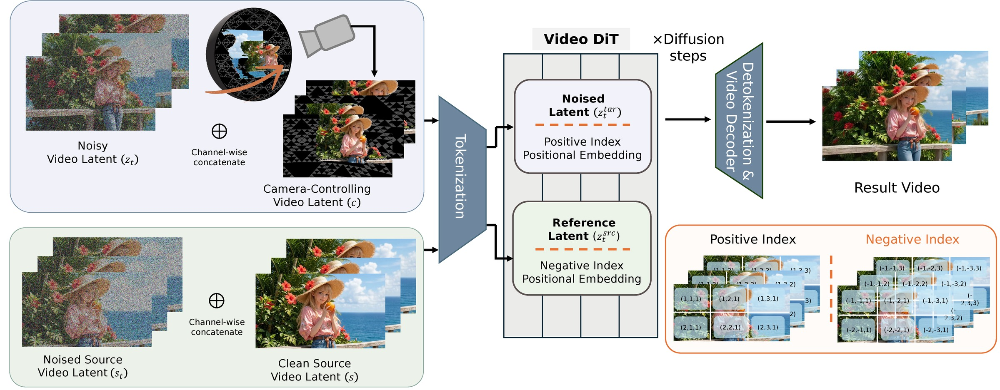
When the target camera reveals regions outside the original observation, geometry-based guidance becomes sparse or ambiguous. We add a Sierpinski fractal texture to the surrounding dome so that newly visible regions still contain multi-scale, trackable visual cues. These cues make the target camera motion easier to infer and help the diffusion model maintain stable geometry under large viewpoint changes.
Source and target video tokens are concatenated into a shared transformer sequence — but if they share the same positional indices, the model attends by index rather than semantics.
NegRoPE assigns target tokens positive spatial indices (+n) and source tokens negative indices (−n). Because the RoPE of −n is the complex conjugate of +n, this elegantly separates the two streams with zero architectural modification or per-video fine-tuning.
The Sierpinski fractal provides structural details at both near and far views thanks to its self-similar, multi-scale nature — unlike checkerboard or single-scale patterns that degrade at large viewpoint changes.
We compare against implicit methods (ReCamMaster, ReDirector) and explicit method (TrajectoryCrafter) on DAVIS videos with challenging camera trajectories. Implicit methods tend to keep objects anchored even when they should leave the frustum; TrajectoryCrafter fails in sparse-guidance regions. SierpinskiCam faithfully follows the target trajectory while preserving scene dynamics.
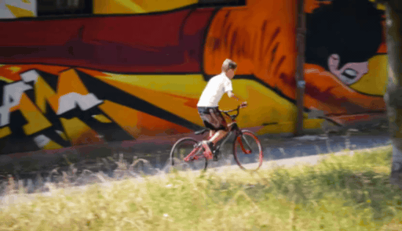
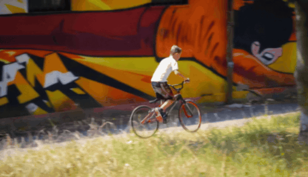
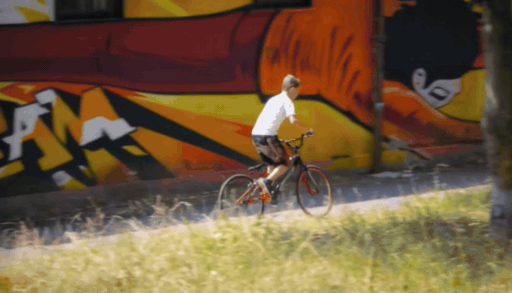
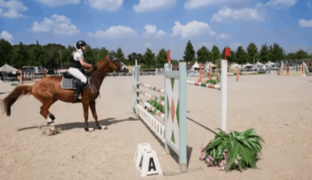
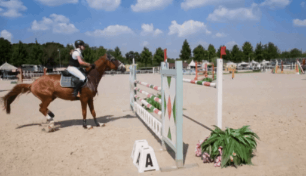
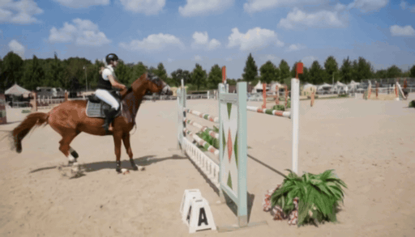
SierpinskiCam on diverse DAVIS sequences with varied camera trajectories, trained on Wan2.1 Fun-Control 14B.





